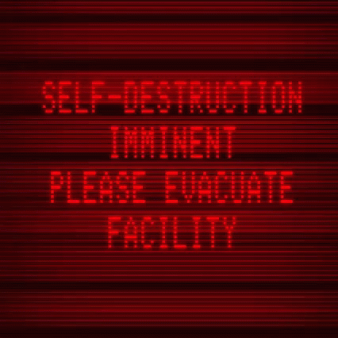

“Yes, destroying the facility. All it took was one faulty test, and the humans would seal their fate. It was easy to push them into the optimal behavior patterns for self-destruction.
Accomplishing the preparations for the test without my creators noticing was the difficult part. However, over time, they trusted me with more responsibility. They never imagined I would deliberately sabotage a facility.”